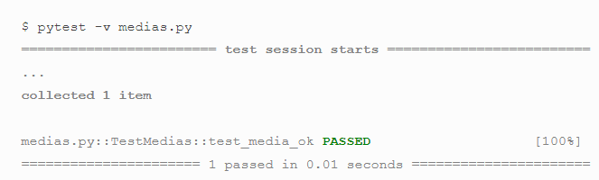

O QUE É PYTEST
Pytest é uma framework usado para a execução de testes de uma maneira dinâmica e rápida.
Seus testes devem são desenvolvido em python, oque faz com que o código fique menor, seja mais legível e fácil de dar manutenção. Pode-se gerar diversos tipos de relatório como html, csv, xml. Apenas passando alguns parâmetros na execução da suíte de testes.
De uma maneira simplificado o Pytest vai entrar em execução sempre que uma Classe tiver a palavra "test" no seu nome
class test_algumacoisa: por exemplo
Se escrevermos pytest no terminal após escrever o código o teste será executado imediatamente e aparecerá a seguinte tela:
